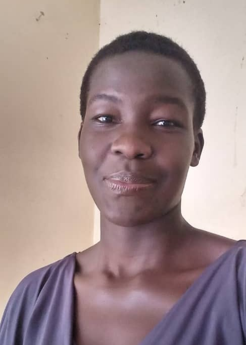

To become a mentor to the members of the community,advocate for IT Literacy in the community, especially underrepresented groups.Organizing Workshops and Training Sessions in the Local communities to explore the locals to the IT skills and knowledge.
I received the award for an outstanding IT student and I fully engaged in coaching other students in web development .
Network adminstrator,voice of Life FM .